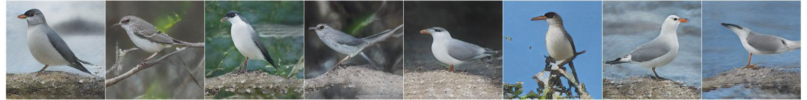

Speech-to-Image Translation without Text
| Jiguo Li | Xinfeng Zhang | Chuanmin Jia | Jizheng Xu | Li Zhang | Yue Wang | Siwei Ma✝ | Wen Gao |
|
|
ICT,CAS | ✝PKU | UCAS |
|
Bytedance |
|
Our speech-to-image transltion task. The input of the model is the speech signal without text. Note that the text are shown only for readibility. Our goal is to show the content of the input speech onto the image.
|
Abstract
Speech-to-image translation without text is an interesting
and useful topic due to the potential applications in humancomputer
interaction, art creation, computer-aided design. etc.
Not to mention that many languages have no writing form.
However, as far as we know, it has not been well-studied
how to translate the speech signals into images directly and
how well they can be translated. In this paper, we attempt to
translate the speech signals into the image signals without the
transcription stage by leveraging the advance of teacher-student
learning and generative adversarial models. Specifically, a speech
encoder is designed to represent the input speech signals as
an embedding feature, and it is trained using teacher-student
learning to obtain better generalization ability on new classes.
Subsequently, a stacked adversarial generative network is used
to synthesized high-quality images conditioned on the embedding
feature encoded by the speech encoder. Experimental results on
both synthesized and real data show that our proposed method is
efficient to translate the raw speech signals into images without
the middle text representation. Ablation study gives more insights
about our method.
Framework
|
Our framework for speech-to-image translation, which is composed with a speech encoder and a stacked generator.
The speech encoder contains a multi-layer CNN and an RNN to encode the input time-frequency spectrogram
into an embedding feature with 1024 dimensions. The speech encoder is trained using teacher-student learning with the pretrained image encoder.
The generator with 3 branches is used to synthesize image at a resolution 256x256 from the embedding feature.
|
Results on synthesized data
|  | |
|
Results on CUB-200 and
Oxford-102 dataset. Left: the input speech description. Right: the synthesized images conditioned on the left speech description and different noises. The speech description are synthesized via Baidu TTS.
|
|
Results on read data

|

|
||

|
|||
|
results on Place-205 dataset with real speech descriptions.
|
|||
Feature interpolation
|
Feature interpolation results on CUB-200 and Oxford-102 dataset.
|
|
Supplementary material
You can find the data in supplemental material here.Paper
| "Speech-to-Image Translation without Text", Jiguo, Li, Xinfeng Zhang, Chuanmin Jia, Jizheng Xu, Li Zhang, Yue Wang, Siwei Ma, Wen Gao Arxiv |
Data and Code
Data
We use 3 datasets in our paper, the data can be downloaded form the following table.
| dataset | image data | speech caption data | split file |
| CUB-200 | CUB-200 | syhthesized by Baidu TTS with person 0 | train/val split |
| Oxford-102 | Oxford-102 | syhthesized by Baidu TTS with person 0 | train/test split |
| Places-205 | Places-205 | Places Audio Captions Dataset | train/test split |
Code
The code will come soon.
Acknowledgment
| The authors would like to thank Shiqi Wang for helpful discussion.
|